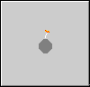

Kaboooom!, simple mine sweeper - Help

Kaboooom! is a simple version of a minesweeper like game. In this version, there is a 15 x 9 mine
field used and player starts in upper left corner and must make it to the lower right corner to
win the game. At each position, the count of how many bombs/mines around the players current
position is displayed. When starting a new game, the game will not generate mines completely
surrounding the start position nor completely surrounding the end position. Once you reach the
lower right corner (home), the game is over and you win. If you hit a bomb on the way, the game
is also over, but you lose.
The game can be played with either the keyboard or the mouse or both. The movement is done using the
keyboard keypad if moving using the keyboard. Num lock can be off or on.
The game contains a built in evaluation process that will 'walk' the mine field for the player
and mark the bomb positions. The evaluation starts from the current position and to the home
position. The evaluation task uses the same logic a player would use and will stop once the
task is at a dead end and can't determine a good next move. Once a player moves by that position,
can potentially have the evaluation re-ran from the new position if needed. The game does keep
track if you use that function or not and will let you know if you win.
Game Options:
The game of Kaboooom! has several options that can affect behavior. Below is a description of
each option and its effect.
- Save Game On = If on, won't allow a player to go through 'marked' grid locations. This is on
by default.
- Sounds On = Turns on/off incidental sounds used in the game. Default is off.
- Verbose Evaluation = If the automatic evaluation button is pressed, this option controlls
the dialogs displayed during the evaluation. Generally, if off, no dialogs are displayed
during the automatic evaluation. If on, can get quite chatty during the evaluation process on
various issues or logic errors hit while doing the evaluation. Default is off.
- Confirmations On = If on, will display various yes/no prompts during game play. Default is
off.
- Random Number of Bombs = If checked, when a new game is started, the number of bombs generated
in the mine field is randomly calculated. The number of bombs will be bewtwen 10 and 40 bombs.
If not checked, then the number of bombs entered in the next option is used and that will be the
number of bombs in the mine field. If checked, the next field is disabled. The default is
checked (on). The number of bomb options only take effect in the next new game started.
- Number of Bombs = The number of bombs to use in the mine field when starting a new game. This
option is not available is using the option to generate a random number of bombs. If used, the
number of bombs must be between 10 and 40. Default is 20.
For more information about Minesweeper games, stategies and variants, see
Minesweeper Wiki.
©2021 Slack & Associates / M. G. Slack